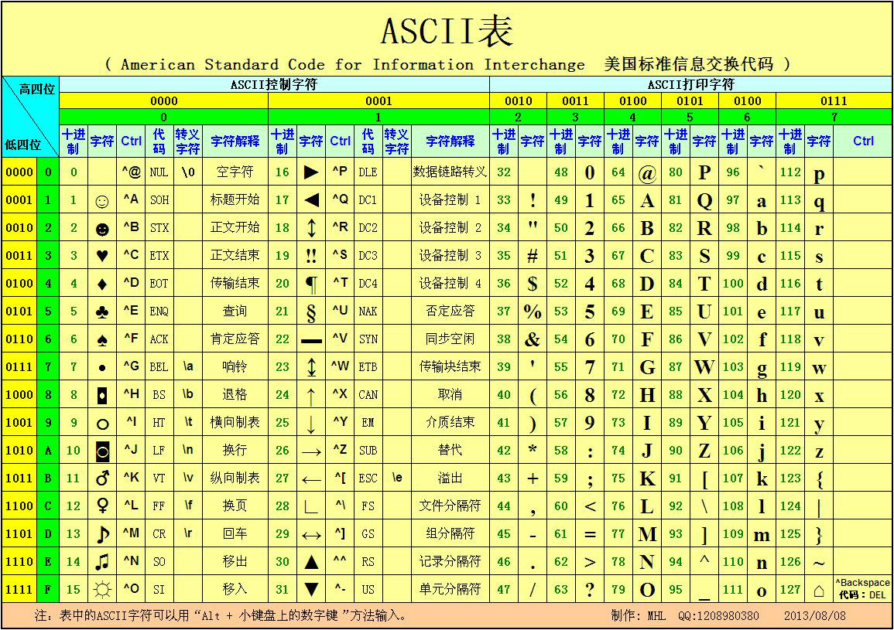

作者：jicanmeng
时间：2014年10月26日
在ASCII(American Standard Code for Information Interchange，美国信息互换标准代码)码表中，换行符'\n'表示Line Feed，表示将光标移动到下一行；回车符'\r'表示Carriage Return，表示将光标移动到本行的行首。

在网上搜关于这两个符号的内容，看见很多文章都是转载了阮一峰老师的一篇文章，全文内容如下：
在计算机还没有出现之前，有一种叫做电传打字机（Teletype Model 33）的玩意，每秒钟可以打10个字符。但是它有一个问题，就是打完一行换行的时候，要用去0.2秒，正好可以打两个字符。要是在这0.2秒里面，又有新的字符传过来，那么这个字符将丢失。
于是，研制人员想了个办法解决这个问题，就是在每行后面加两个表示结束的字符。一个叫做"回车"，告诉打字机把打印头定位在左边界；另一个叫做"换行"，告诉打字机把纸向下移一行。
这就是"换行"和"回车"的来历，从它们的英语名字上也可以看出一二。
后来，计算机发明了，这两个概念也就被般到了计算机上。那时，存储器很贵，一些科学家认为在每行结尾加两个字符太浪费了，加一个就可以。于是，就出现了分歧。
Unix系统里，每行结尾只有"<换行>"，即"\n"；Windows系统里面，每行结尾是"<回车><换行>"，即"\r\n"；Mac系统里，每行结尾是"<回车>"。一个直接后果是，Unix/Mac系统下的文件在Windows里打开的话，所有文字会变成一行；而Windows里的文件在Unix/Mac下打开的话，在每行的结尾可能会多出一个^M符号。
这篇文章写的浅显易懂，简洁明了。但我不明白的是，为什么Unix系统下的文件在Windows里打开的话，所有文字会变成一行。按照我的理解，假设unix系统下的文件有两行，那么在windows下打开的话，应该也有两行，只是第二行不是从头开始的。但是事实不是，这是为什么呢？